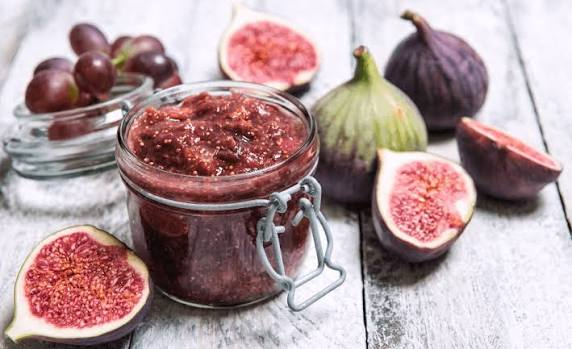

Confiture
de figues du Razès


⟹ Douceurs & Spécialités Sucrées ⟸
Le figuier, arbre familier du Midi. La confiture de figues du Razès s’inscrit dans une histoire bien plus ancienne que celle des pots de confiture modernes. Originaire du bassin méditerranéen et du Proche-Orient, le figuier (Ficus carica) accompagne depuis l’Antiquité les sociétés méditerranéennes. Peu exigeant, capable de pousser sur des sols pierreux et dans des endroits secs, il a longtemps été planté près des maisons, des murs, des chemins, des vignes et des jardins. Dans l’Aude comme ailleurs dans le Midi, il constituait un arbre nourricier autant qu’un élément familier du paysage rural.
Le Razès, entre influences méditerranéennes et piémont pyrénéen. Cette ancienne région historique de l’ouest audois, organisée autour d’un ensemble de collines, de vallées et de villages au sud-ouest de Carcassonne et autour de Limoux, connaît des influences climatiques mêlées. Les figuiers profitent des expositions chaudes et abritées, notamment dans les jardins et contre les murs de pierre qui restituent la chaleur. La culture était souvent domestique plutôt que conduite en grands vergers : quelques arbres pouvaient suffire à fournir une famille en fruits frais, fruits séchés et conserves.

Conserver l’abondance de la fin d’été. La figue mûre est délicate et se conserve peu de temps après la cueillette. Dans les économies rurales, il fallait donc transformer rapidement les fruits que l’on ne pouvait consommer frais. Le séchage au soleil fut longtemps une solution essentielle ; la cuisson avec du sucre, lorsque celui-ci devint plus accessible, permit de préparer confitures, compotes et fruits confits destinés aux mois d’hiver. La confiture répondait ainsi à une logique d’économie domestique : ne rien perdre de la récolte et prolonger la saison.
De la conservation au sucre à la confiture familiale. Pendant des siècles, le sucre fut un produit coûteux. Les préparations sucrées concentrées étaient d’abord réservées aux milieux aisés ou utilisées en petites quantités. La diffusion du sucre de canne puis, surtout à partir du XIXᵉ siècle, du sucre de betterave transforma les habitudes alimentaires européennes. Les confitures devinrent beaucoup plus courantes dans les foyers ruraux. Dans une région fruitière comme le Razès, les chaudrons de fin d’été s’inscrivent dans cette démocratisation des conserves sucrées.
Le chaudron et la bassine à confiture. La cuisson traditionnelle se faisait dans une bassine large, souvent en cuivre non étamé réservée aux préparations très sucrées. Sa grande surface favorise l’évaporation de l’eau et permet d’atteindre plus rapidement la concentration recherchée. Les figues, naturellement riches en sucres, donnent une préparation dense et parfumée ; le jus de citron apporte de l’acidité, équilibre la douceur et contribue à la prise. Selon les maisons, on pouvait laisser les fruits en morceaux, les écraser davantage ou prolonger la cuisson pour obtenir une texture plus sombre et confite.
Une recette de maison, donc une multitude de variantes. Il n’existe pas une formule unique de « confiture de figues du Razès » comparable à un produit bénéficiant d’un cahier des charges d’appellation. Les recettes familiales varient selon la variété et la maturité des figues, la quantité de sucre et les habitudes domestiques. Citron, vanille, anis, cannelle, noix, amandes ou parfois une petite quantité d’alcool peuvent compléter le fruit. Cette diversité est précisément caractéristique des conserves paysannes transmises par pratique plutôt que par recette officielle.
Figues blanches, vertes ou violettes. Les jardins méridionaux accueillent de nombreuses variétés locales ou acclimatées, dont les noms peuvent changer d’un village à l’autre. Certaines figues sont appréciées fraîches, d’autres conviennent mieux au séchage ou à la cuisson. Pour la confiture, on recherche surtout des fruits arrivés à pleine maturité, riches en arômes et cueillis avant qu’ils ne s’abîment. Les petites graines, conservées dans la préparation, donnent à la confiture sa texture légèrement granuleuse caractéristique.
Une place dans l’alimentation rurale. Le pot de confiture permettait d’apporter du fruit et de l’énergie au petit-déjeuner ou au goûter, mais aussi de garnir tartes, crêpes, pains et pâtisseries de ménage. La figue se marie également avec les productions salées du Midi : fromages de chèvre ou de brebis, charcuteries et préparations aigres-douces. Ces usages contemporains prolongent l’ancienne habitude d’associer fruits conservés et aliments de garde.
Du garde-manger au produit de terroir. Au XXᵉ siècle, la généralisation des conserves industrielles, des réfrigérateurs et des fruits disponibles plus longtemps dans l’année a réduit la nécessité de préparer de grandes quantités de confiture. Pourtant, la pratique domestique a survécu, notamment parce qu’elle valorise les fruits des jardins et les récoltes trop abondantes. Les marchés de producteurs, boutiques de terroir et ateliers fermiers ont redonné une visibilité commerciale à ces préparations.
Une mémoire du paysage du Razès. Plus qu’une spécialité dont on pourrait fixer précisément la date de naissance, la confiture de figues raconte une économie de jardin, de saison et de conservation. Elle évoque les figuiers plantés près des maisons, la récolte de la fin d’été, les bassines chauffées longuement et les pots rangés pour l’hiver. C’est cette continuité de gestes domestiques qui constitue son principal héritage.
Confiture figues-miel : le sucre est en partie remplacé par du miel local, pour un goût plus rond
Confiture figues-noix : enrichie de cerneaux de noix concassés en fin de cuisson
Confiture figues-anis étoilé : parfumée d'une pointe d'anis, très appréciée dans le Razès
La confiture de figues du Razès se déguste avant tout à la table familiale, mais se trouve aussi sur les marchés fermiers de la région.
Marchés fermiers du Razès où les producteurs locaux vendent leurs confitures maison en direct.
Fermes-auberges de l'Aude qui proposent souvent la confiture de figues en accompagnement des fromages.
Épiceries fines de Limoux, pour rapporter quelques pots artisanaux en souvenir.